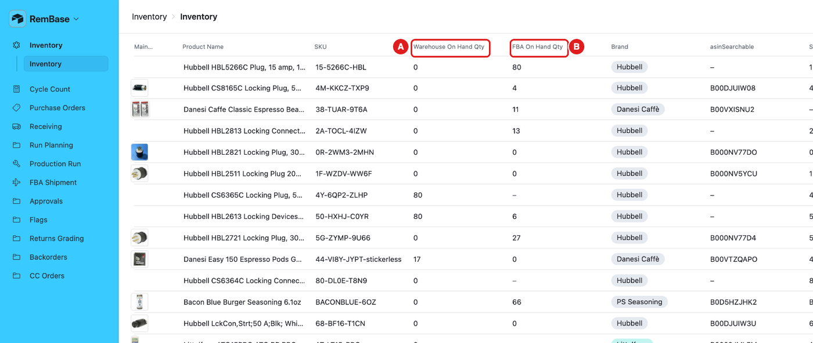
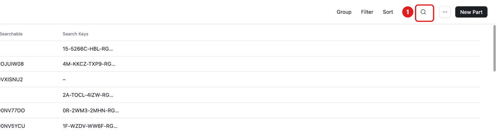
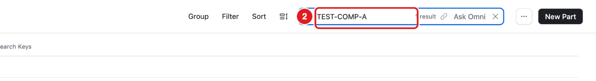
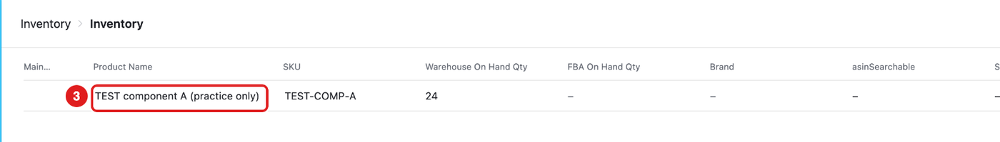
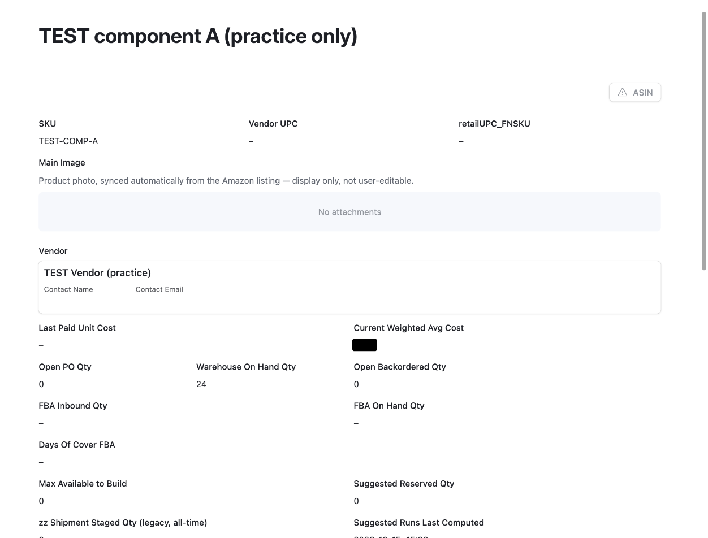
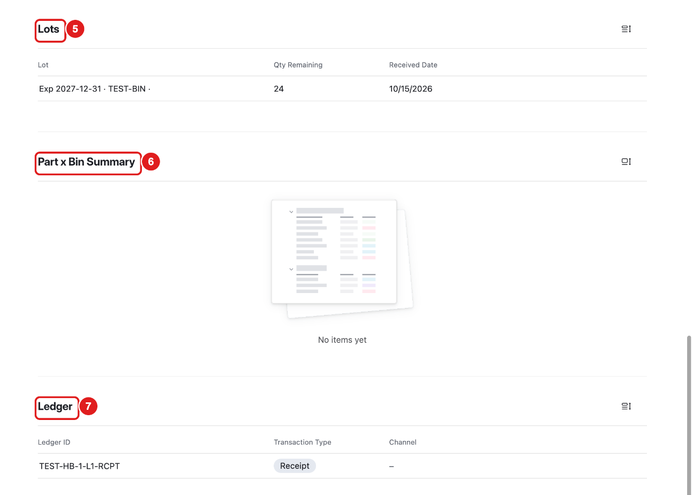
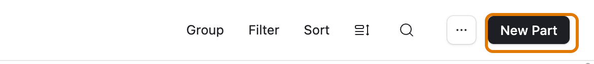
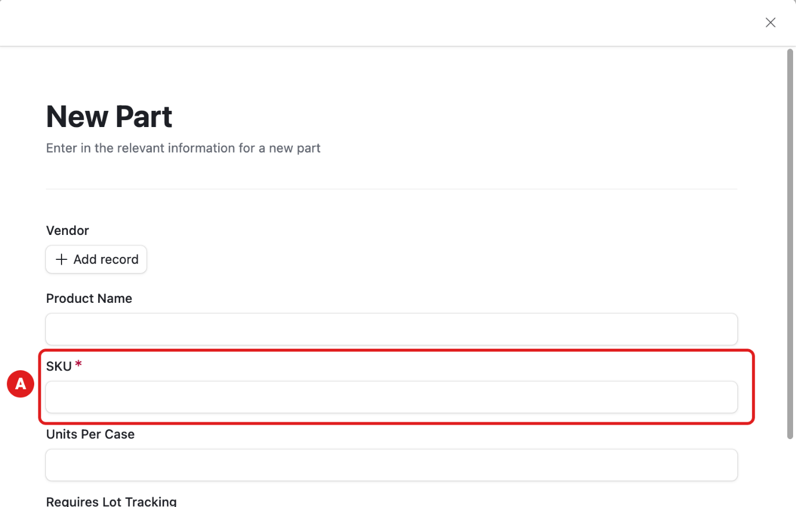
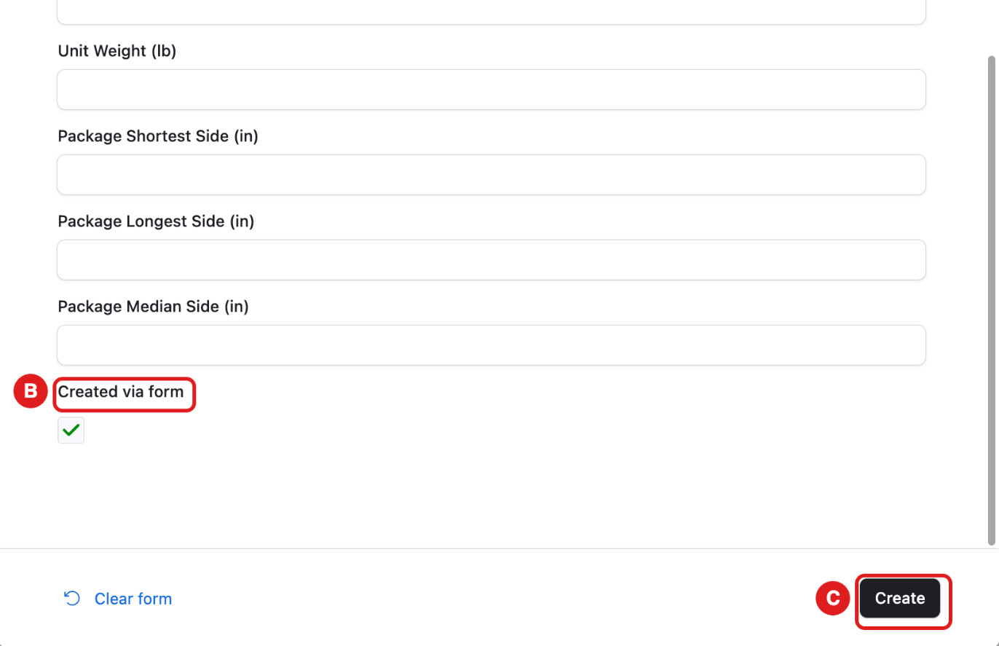

What this page is for
Inventory shows every part. You can see how many we have in the warehouse and at Amazon, and in which bins.
Who uses it: everyone looks here. Only Becca and Adam add new parts.
For most people this page only shows information. You can look at real parts here. Do not change anything on a real part.
The list

- A – Warehouse On Hand Qty: how many are in our warehouse.
- B – FBA On Hand Qty: how many are at Amazon. Stock moving between Amazon warehouses counts as stock at Amazon.
- A dash (–) means no number yet.
Task: find a part and see its stock
Click Inventory in the menu.
Click the magnifying glass at the top right.

Type the part number. For practice, type TEST-COMP-A.

Click the part in the list.

The part page opens. At the top you see the stock numbers.

Scroll down. You see more sections:

- 5 – Lots: each lot, its expiration date, its bin and how many are left.
- 6 – Part x Bin Summary: how many are in each bin. It updates every hour.
- 7 – Ledger: every stock move for this part. Each receipt, run or count adds a line.


What you should see
For TEST-COMP-A after the practice receipt:
- Warehouse On Hand Qty = 24
- One lot that expires 12/31/2027 in TEST-BIN
- One ledger line of type Receipt
Task: add a new part (Becca and Adam only)
Only Becca and Adam add new parts. Everyone else: ask Becca to add the part.
Click Inventory in the menu.
Click New Part at the top right.

A form opens. Type the SKU (A). You must fill it in.

Fill in the other boxes you know.
Scroll down. Created via form (B) is ticked by itself. You cannot untick it.
Click Create (C).



Always use New Part. A part made any other way (the data grid, an import, or Create “…” in a part list) is left out of planning, and Becca gets a flag.
Words on this page
- Max Available to Build is not stock. For a pack, it is how many packs the parts can make. For a single part that goes into packs, it is what is left after the packs take their share. See Run Planning.
- Open PO Qty is how many are ordered but not received yet.
- FBA Inbound Qty is how many are on the way to Amazon.
Common mistakes
- Reading the wrong column. Warehouse and Amazon (FBA) are two different numbers.
- Expecting Part x Bin Summary right away. It can take up to one hour to update.
- Making a part another way. Only use New Part. A part made from a part list (Create “…”) is left out of planning.
- Pressing New Part if you are not Becca or Adam. Ask Becca to add the part.